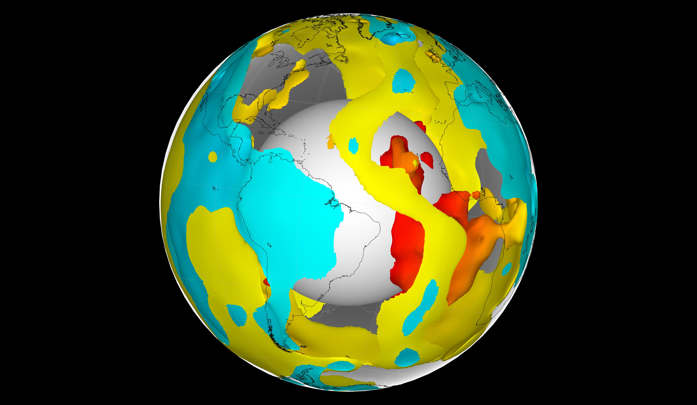

Visualization/database
Open source mantle convection codes
Visualization/database
Open source mantle convection codes
SubMachine: Web-based tools for the interactive visualisation
SubMachine is a collection of web-based tools for the interactive visualisation, analysis, and quantitative comparison of global-scale, volumetric (3-D) data sets of the subsurface, with supporting tools for interacting with other, complementary models and data sets.
This visualisation tool is self-explanatory and well instructed on their website.
GPlates: Desktop software for the interactive visualisation of plate-tectonics

GPlates
offers a novel combination of interactive plate-tectonic reconstructions,
geographic information system (GIS) functionality and raster data visualisation.
GPlates enables both the visualisation and the manipulation of plate-tectonic
reconstructions and associated data through geological time.
A very well documented instruction to running GPlates can be found
here.
Primarily the software can be used for tectonic reconstructions, however,
quite handy for plotting 3-D images of earth in a spherical cell.
Paraview
ParaView is an open-source, multi-platform data analysis and visualization application. ParaView users can quickly build visualizations to analyze their data using qualitative and quantitative techniques. The data exploration can be done interactively in 3D or programmatically using ParaView's batch processing capabilities.
Generic Mapping Tool: An open-source, code based geophysical map plotting tool
GMT
is an open-source, code based visualisation tool for geophysical data.
The updated version of GMT 5 and 6 are now available.
For beginners, it could be difficult to install GMT in their machine. Linux (Ububtu)
is the recommended OS to work. I will update the installation process for GMT soon.
I have some basic GMT resources
for students who are new in coding and are getting lost in huge repository of the GMT website.
Check out some GMT instructions here
The Atlas of the underworld
The Atlas of the underworld
is the first complete mapping of subducted plates in the Earth's mantle and their geological interpretation.
This website covers the structure of Earth's entire mantle and its plate tectonic evolution of the last 300 million years. Every geological record is under active study by the geological community, and undoubtedly improvements can be made on the geological interpretations or the tomographic imaging and interpretation of the slabs. Therefore, we provide a 'post-publication peer review' system through a forum below every slab where you can leave references to new published information and its implication or alternative geological interpretations. We would appreciate if this forum would be used for geoscientific debate only.
CitcomS

CitcomS is a finite element code designed to solve thermal convection problems relevant to earth’s mantle released under the GNU General Public License (see Appendix D on page 97). Written in C, the code runs on a variety of parallel processing computers, including shared and distributed memory platforms.
LaMEM
LaMEM (Lithosphere and Mantle Evolution Model) is a parallel 3D numerical code that can be used to simulate various thermo-mechanical geodynamical processes such as mantle-lithosphere interaction for rocks that have visco-elasto-plastic rheologies. It was developed to better understand geological processes, particularly related to the dynamics of the crust and lithosphere and their interaction with the mantle. It can also be used to solve geomechanical problems, includes (compressible) poroelasticity, has a gravity solver and an (adjoint) inversion framework. The code uses a marker-in-cell approach with a staggered finite difference discretization and is built on top of PETSc such that it can run on anything from a laptop to a massively parallel machine.
ASPECT
ASPECT is a code to simulate problems in thermal convection. Its primary focus is on the simulation of processes in the Earth’s mantle, but its design is more general than that.
Underworld

Underworld is a Python API (Application Programming Interface) which provides functionality for the modelling of geodynamics processes, and is designed to work (almost) seamlessly across PC, cloud and HPC infrastructure. Primarily the API consists of a set of Python classes from which numerical geodynamics models may be constructed. The API also provides the tools required for inline analysis and data management. For scalability across multiprocessor platforms, MPI (Message Passing Interface) is leveraged, and for performant operation all heavy computations are executed within a statically typed layer.